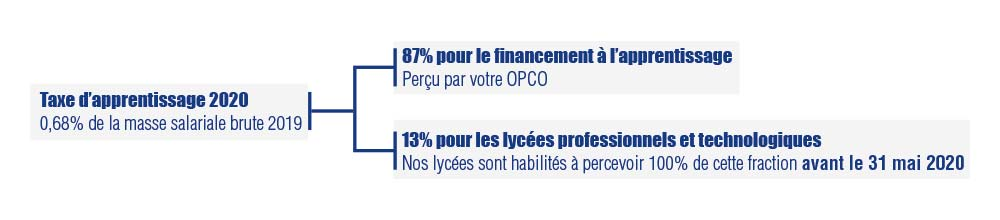

Au Sommaire :
> La Taxe d'Apprentissage à payer avant le 31 mai, nous comptons sur vous !
> Nouveau pour accueillir des apprentis ou des stagiaires dès la rentrée prochaine
> Une nouvelle formation à la rentrée : le BTS Audiovisuel en alternance
Tous solidaires !
Nous venons de subir une des plus grandes crises de l'histoire de notre pays et du monde. Comme de nombreuses entreprises, nous avons été impactés dans notre activité.
Nous avions accueilli pendant toute la période de confinement les enfants et collégiens des personnels de santé et des forces de police et de gendarmerie.
Depuis le 14 mai, conformément aux directives du ministère de l'éducation et avec les mesures sanitaires appropriées, l'école Notre-Dame La Riche a de nouveau ouvert ses portes pour tous les enfants dont les parents l'ont souhaité.
La semaine dernière, c'était le tour des collégiens de 6e et 5ème puis nous attendons les directives pour les lycéens, autres collégiens et les étudiants de notre pôle enseignement supérieur.
Les stagiaires et apprentis sont accueillis également depuis aujourd'hui au centre de formation ISCB.
Nous espérons que cette période de déconfinement se passe bien pour les entreprises qui ont été autorisées à redémarrer. Nous avons une pensée particulière pour toutes les entreprises de la restauration, de l'hôtellerie et de l'événementiel qui n'ont toujours pas pu reprendre leur activité.Nous avons été également obligés de fermer notre restaurant de formation “la Gabarre”.
Malgré tout, il faut regarder vers l'avenir et continuer à délivrer des formations de qualité aux jeunes qui seront demain vos salariés.
C'est dans cet esprit que je vous sollicite pour le versement libre des 13% de la taxe d'apprentissage 2020 qui est à verser avant le 31 mai 2020. Vous trouverez le détail ci-dessous.
C'est dans cet esprit également que nous mettons à votre intention un nouveau service pour vous permettre simplement d'exprimer vos besoins en apprentis ou stagiaires pour la rentrée prochaine et ainsi vous permettre d'exercer votre activité dans des conditions sereines. Je vous invite à lire l'article consacré.
Enfin, malgré cette crise sanitaire, nous continuons à aller de l'avant et créons une nouvelle formation qui est fortement demandée par les entreprises (le poids des images et des vidéos est de plus en plus important dans notre société) et qui sera unique dans notre région : Le BTS Audiovisuel en alternance.
Au plaisir d'échanger, n'hésitez pas à nous faire part de vos remarques, avis ou suggestions...
Benoît VISSE
Directeur Coordinateur de l'Institution Notre-Dame La Riche
La Taxe d'Apprentissage
Nous avons conscience que le versement de la taxe d'apprentissage n'est certainement pas la première préoccupation des chefs d'entreprise dans cette période incertaine, mais pour l'immédiat, le gouvernement n'a toujours pas indiqué de report de date pour le versement des 13% pour les lycées professionnels et technologiques. Et donc si aucun report de date n'est annoncé la date du 31 mai restera obligatoire pour le versement de ces 13% de la taxe d'apprentissage.
Cette part de taxe d'apprentissage nous est malgré tout indispensable pour continuer à offrir des formations de qualité à nos jeunes (qui seront vos futurs salariés) et pour investir dans du matériel performant pour bien les former.

En 2020, les règles de calcul de la taxe d'apprentissage sont les mêmes, à savoir 0.68% de la Masse salariale 2019. Ce qui change en 2020, c'est que cette somme est divisée en 2 parties et que c'est vous qui devez directement la répartir :
• 87% destinés au financement de l'apprentissage, anciennement appelé le quota d'apprentissage. Ces 87% doivent être versés directement à votre OPCO qui ont remplacé les OPCA.
• 13% destinés à la dépense libératoire effectuée par l'employeur ou l'entreprise, anciennement appelée hors quota. Ils doivent être versés directement aux établissements habilités. Ce sont ces 13% que vous pouvez verser à Notre-Dame La Riche pour son lycée professionnel et/ou lycée technologique avant le 31 mai 2020. Ainsi vous contribuerez à l'innovation constante de vos futurs collaborateurs, à la qualité des enseignements pédagogiques dispensés dans ces établissements et au développement de filières d'avenir (numérique, commerce, vente, hôtellerie, restauration...)
Pour verser votre Taxe d'Appentissage, nous vous invitons à vous rendre dès aujourd'hui et au plus tard avant le 31 mai 2020, sur la page dédiée de notre site web : www.notredamelariche.fr/TA, vous y trouverez un formulaire à remplir directement en ligne ou un formulaire à télécharger ainsi que les coordonnées pour effectuer votre règlement par virement ou par chèque...
Si c'est une société d'expertise comptable qui s'occupe de cette démarche, n'hésitez pas à lui transmettre cette news ou de lui demander de verser les 13% de la Taxe d'Apprentissage au lycée technologique ou au lycée professionnel Notre Dame La Riche.
Pour mémoire, le versement des 13% est obligatoire pour toutes les entreprises puisque la Taxe d'Apprentissage est un impôt. Si ce n'est pas vous qui décidez aujourd'hui, ce sera l'Etat qui encaissera la somme et qui fera ensuite une répartition entre les différents établissements.
Dès réception des éléments (formulaire rempli en ligne ou formulaire papier et votre règlement), nous vous adresserons un reçu fiscal libératoire.
Une question ?
Pour toutes demandes, n'hésitez pas à contacter Caroline PLATTEAU, en charge de la Taxe d'Apprentissage à Notre-Dame La Riche au 06 22 58 07 56, par mail à caroline.platteau@indlr.fr ou par le formulaire de contact de notre site web : notredamelariche.fr/contact.html
Nous comptons sur vous !
Besoin de stagiaire(s), d'apprenti(s)...
Avant la crise sanitaire, le recrutement était devenu une des principales préoccupations de beaucoup d'entreprises et trouver du personnel à la hauteur des attentes de chacun n'était pas évident.
La période que nous venons de traverser ne devrait pas à court terme modifier cette donne et une des voies privilégiées est le recrutement d'apprentis ou l'accueil de stagiaires.
Dans cet esprit, et pour vous faciliter la tâche, que Notre-Dame la Riche a mis en place un formulaire sur son site web accessible à l'adresse www.notredamelariche.fr/stages.
Vous y trouverez le détail des formations dispensées au sein de notre institution que ce soit au niveau du lycée professionnel ou de l'enseignement supérieur au niveau des stages non rémunérés ou des BTS en alternance formés par le Centre de Formation ISCB pour les apprentis.
En tout, ce sont 13 filières disponibles pour accueillir des stagiaires et 9 pour les BTS en alternance.
Une fois le formulaire rempli, il sera transmis à chaque responsable de formation qui pourra ainsi vous mettre en relation avec des lycéens ou étudiants.
Vous avez bien sûr la possibilité de pouvoir choisir une ou plusieurs formations.
Envie de tester, rendez-vous dès aujourd'hui sur la page dédiée : www.notredamelariche.fr/stages
Une nouvelle formation pour la rentrée prochaine : le BTS Audiovisuel
Offrir des formations de qualité pour que demain vous puissiez trouver les salariés qui vous permettront de faire prospérer vos entreprises est notre ambition.
C'est dans cet esprit que nous lançons à la rentrée prochaine une nouvelle formation qui permettra aux étudiants d'obtenir un diplôme reconnu par l'Etat : le BTS Audiovisuel en alternance.
Les étudiants qui choisissent ce diplôme suivent un tronc commun et choisissent une option qui les formera à leur futur métier. La formation porte sur la technologie des équipements et des supports, les techniques de mise en oeuvre, l'économie et la gestion, l'anglais, la culture audiovisuelle et artistique.
2 options sont proposées pour la rentrée prochaine :
👉 L'option Gestion de production pour la formation des assistants ou des régisseurs de production.
👉 L'option Techniques d'ingénierie et exploitation des équipements pour la formation des techniciens chargés d'entretenir, de régler et de gérer le matériel
Pour en savoir plus sur le détail de ces formations, rendez-vous sur la page BTS de notre site web.
Si vous souhaitez accueillir un apprenti de cette nouvelle formation, rendez-vous sur le formulaire dédié.
Une remarque, une question ou pour nous contacter :
Institution Notre-Dame La Riche | 26 rue de la Bourde, 37000 TOURS
Tél. 02 47 36 32 00
| ndlr@ndlr.fr
| www.notredamelariche.fr
Suivez nos actualités sur :

|